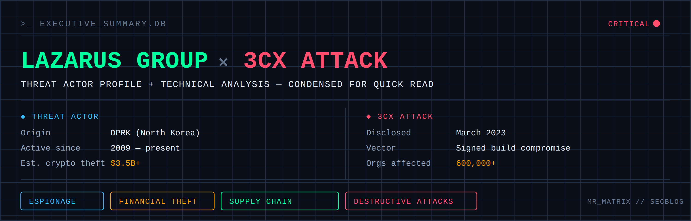

Lazarus Group is a North Korean state-sponsored Advanced Persistent Threat (APT) tracked since at least 2009. It is attributed to the DPRK with high confidence and is known under multiple aliases, including MITRE ATT&CK G0032, Microsoft's Diamond Sleet, CISA's Hidden Cobra, and CrowdStrike's Labyrinth Chollima. Unlike most APTs that specialize in a single objective, Lazarus runs a wide portfolio spanning cyber espionage, destructive attacks, ransomware, and — increasingly — large-scale cryptocurrency theft used to fund the North Korean regime under sanctions.
| ATTRIBUTE | DETAIL |
|---|---|
| Origin | Democratic People's Republic of Korea (DPRK) |
| Active since | 2009 — present (16+ years) |
| MITRE ID | G0032 |
| Primary motivations | Financial theft (crypto), cyber espionage, disruptive/destructive attacks |
| Notable subclusters | APT38 (financial), Andariel, BlueNoroff |
| Est. cumulative crypto theft | $3.5B+ across tracked campaigns |
Its campaign history spans the 2014 Sony Pictures attack, the 2016 Bangladesh Bank SWIFT heist, the 2017 WannaCry outbreak, Operation AppleJeus (2018–present), the 2023 3CX supply chain attack, the 2024 WazirX breach, the Contagious Interview and Fake IT Worker social-engineering campaigns, and the record $1.5B Bybit heist in February 2025 — the largest cryptocurrency theft publicly reported to date.
→ Read the full Threat Actor Profile for aliases, attribution evidence, the complete historical timeline, and detailed write-ups of every campaign.
The table below summarizes the techniques most frequently observed across Lazarus operations.
| PHASE | COMMON TECHNIQUES |
|---|---|
| Initial Access | Spear Phishing, Watering Hole Attacks, Software Supply Chain Compromise, Trojanized Software, Fake Recruiters (Contagious Interview), SEO Poisoning, ClickFix |
| Execution | DLL Side-Loading, PowerShell, Shellcode Execution, Living-off-the-Land Binaries (LOLBins), Command-Line Execution |
| Persistence | Scheduled Tasks, Registry Run Keys, Service Installation, Startup Folder, DLL Search Order Hijacking |
| Privilege Escalation | BYOVD (Bring Your Own Vulnerable Driver), Token Manipulation, UAC Bypass |
| Defense Evasion | RC4/XOR Encryption, Anti-VM, Anti-Sandbox, Geofencing, Obfuscated Payloads, Encrypted Configuration Files |
| Credential Access | Browser Credential Theft, Cookie Theft, Keylogging, LSASS Access |
| Discovery | Host Enumeration, Domain Enumeration, Network Discovery, Process Enumeration |
| Lateral Movement | WMI, SMB, PsExec, Remote Services, RDP |
| Collection | Browser History, Cookies, Credentials, Documents, Cryptocurrency Wallets |
| Command & Control | HTTPS, GitHub Dead-Drop Resolvers, Encrypted Configuration Retrieval, DNS, Cloud Services |
| Exfiltration | HTTPS Upload, Cloud Storage Abuse, Encrypted Archives |
→ Read the full Technical Analysis for the reverse-engineered walkthrough of every malware component, the complete IOC set, and the MITRE ATT&CK mapping.
Over time, Lazarus has significantly expanded its capabilities.
| PERIOD | PRIMARY FOCUS |
|---|---|
| 2009–2014 | Espionage & Destructive Malware |
| 2015–2018 | Financial Institutions & SWIFT Attacks |
| 2018–2022 | Cryptocurrency Exchanges & AppleJeus Campaigns |
| 2023 | Software Supply Chain (3CX) |
| 2024 | Social Engineering (Contagious Interview, Fake IT Worker) |
| 2025 | Large-Scale Cryptocurrency Heists & Open-Source Supply Chain Attacks |
| REPORT | COVERS |
|---|---|
| Threat Actor Profile | Overview, aliases, attribution, historical timeline, objectives & motivation, and every major publicly reported campaign from 2014–2025 |
| Technical Analysis | Full reverse-engineered walkthrough of the 3CX supply chain attack, the consolidated IOC set, and the complete MITRE ATT&CK mapping |